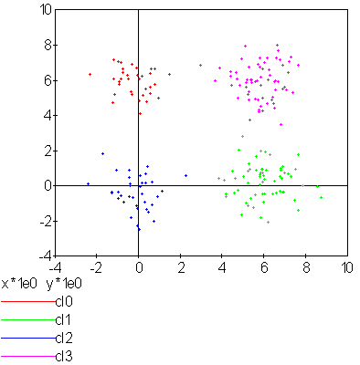
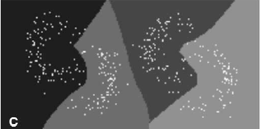

k-means#
Dénomination française : algorithme des centres mobiles.
Principe#
Les centres mobiles ou nuées dynamiques sont un algorithme de classification non supervisée. A partir d’un ensemble de points, il détermine pour un nombre de classes fixé, une répartition des points qui minimise un critère appelé inertie ou variance intra-classe.
Algorithme A1 : centre mobile, k-means
On considère un ensemble de points :
A chaque point est associée une classe : \(\left(c_i\right)_{1\leqslant i\leqslant P}\in\left\{1,...,C\right\}^P\). On définit les barycentres des classes : \(\left( G_i\right)_{1\leqslant i\leqslant C}\in\left(\mathbb{R}^N\right)^C\).
Initialisation
L’initialisation consiste à choisir pour chaque point une classe aléatoirement dans \(\left\{1,...,C\right\}\). On pose \(t = 0\).
Calcul des barycentres
Calcul de l’inertie
Attribution des classes
Retour à l’étape du calcul des barycentres jusqu’à convergence de l’inertie \(I^t\).
Théorème T1 : convergence des k-means
Quelque soit l’initialisation choisie, la suite \(\pa{I_t}_{t\supegal 0}\) construite par l’algorithme des k-means converge.
La démonstration du théorème nécessite le lemme suivant.
Lemme L1 : inertie minimum
Soit \(\vecteur{X_1}{X_P} \in \pa{\mathbb{R}^N}^P\), \(P\) points de \(\mathbb{R}^N\), le minimum de la quantité \(Q\pa{Y \in \mathbb{R}^N}\) :
est atteint pour \(Y=G=\dfrac{1}{P} \sum_{i=1}^{P} X_i\) le barycentre des points \(\vecteur{X_1}{X_P}\).
Soit \(\vecteur{X_1}{X_P} \in \pa{\mathbb{R}^N}^P\), \(P\) points de \(\mathbb{R}^N\).
On peut maintenant démontrer le théorème. L’étape d’attribution des classes consiste à attribuer à chaque point le barycentre le plus proche. On définit \(J_t\) par :
On en déduit que :
Le lemme précédent appliqué à chacune des classes \(\ensemble{1}{C}\), permet d’affirmer que \(I^{t+1} \infegal J^{t+1}\). Par conséquent, la suite \(\pa{I_t}_{t\supegal 0}\) est décroissante et minorée par 0, elle est donc convergente.
L’algorithme des centres mobiles cherche à attribuer à chaque point de l’ensemble une classe parmi les \(C\) disponibles. La solution trouvée dépend de l’initialisation et n’est pas forcément celle qui minimise l’inertie intra-classe : l’inertie finale est un minimum local. Néanmoins, elle assure que la partition est formée de classes convexes : soit \(c_1\) et \(c_2\) deux classes différentes, on note \(C_1\) et \(C_2\) les enveloppes convexes des points qui constituent ces deux classes, alors \(\overset{o}{C_1} \cap \overset{o}{C_2} = \emptyset\). La figure suivante présente un exemple d’utilisation de l’algorithme des centres mobiles. Des points sont générés aléatoirement dans le plan et répartis en quatre groupes.

C’est une application des centres mobiles avec une classification en quatre classes d’un ensemble aléatoire de points plus dense sur la partie droite du graphe. Les quatre classes ainsi formées sont convexes.
Homogénéité des dimensions#
Les coordonnées des points \(\left(X_i\right) \in \mathbb{R}^N\) sont généralement non homogènes : les ordres de grandeurs de chaque dimension sont différents. C’est pourquoi il est conseillé de centrer et normaliser chaque dimension. On note : \(\forall i \in \intervalle{1}{P}, \; X_i = \vecteur{X_{i,1}}{X_{i,N}}\) :
Les points centrés et normalisés sont :
L’algorithme des centres mobiles est appliqué sur l’ensemble \(\left( X_{i}^{\prime}\right)_{1\leqslant i\leqslant P}\). Il est possible ensuite de décorréler les variables ou d’utiliser une distance dite de Malahanobis définie par \(d_M\pa{X, Y} = X \, M \, Y'\) où \(Y'\) désigne la transposée de \(Y\) et \(M\) est une matrice symétrique définie positive. Dans le cas de variables corrélées, la matrice \(M = \Sigma^{-1}\) où \(\Sigma^{-1}\) est la matrice de variance-covariance des variables aléatoires \(\pa{X_i}_i\).
Améliorations de l’initialisation#
K-means++#
L’article [Arthur2007] montre que l’initialisation aléatoire n’est pas efficace et est sensible aux outliers ou points aberrants. L’étape d’initialisation est remplacée par la suivante :
Algorithme A2 : initialisation k-means++
Cette étape d’initialisation viendra remplacer celle définie dans l’algorithme k-means. On considère un ensemble de points :
A chaque point est associée une classe : \(\left(c_i\right)_{1\leqslant i\leqslant P}\in\left\{1,...,C\right\}^P\).
Pour \(k\) centres, on choisit \(C_1\) au hasard dans l’ensemble \(X\). Pour les suivants :
\(k \leftarrow 2\)
On choisit aléatoirement \(G_k \in X\) avec la probabilité \(P(x) = \frac{D_{k-1}(x)^2}{\sum_{x\in X}D_{k-1}(x)^2}\)
\(k \leftarrow k+1\)
On revient à l’étape 2 jusqu’à ce que \(k=C\).
La fonction \(D_k\) est définie par la distance du point \(x\) au centre \(G_l\) choisi parmi les \(k\) premiers centres. \(D_k(x) = \min_{1 \infegal l \infegal k} d(x - G_l)\).
La suite de l’algorithme k-means++ reprend les mêmes étapes que k-means.
Cette initilisation éloigne le prochain centre le plus possibles des centres déjà choisis. L’article montre que :
Théorème T2 : Borne supérieure de l’erreur produite par k-means++
On définit l’inertie par \(J_(X) = \sum_{i=1}^{P} \; \min_G d^2(X_i, G)\). Si \(J_{OPT}\) définit l’inertie optimale alors \(\esp{J(X)} \infegal 8 (\ln C + 2) J_{OPT}(X)\).
La démonstration est disponible dans l’article [Arthur2007].
K-means||#
L’article [Bahmani2012] propose une autre initialisation que K-means++ mais plus rapide et parallélisable.
Algorithme A3 : initialisation k-means||
Cette étape d’initialisation viendra remplacer celle définie dans l’algorithme k-means. On considère un ensemble de points :
A chaque point est associée une classe : \(\left(c_i\right)_{1\leqslant i\leqslant P}\in\left\{1,...,C\right\}^P\).
Pour \(k\) centres, on choisit \(G = \{G_1\}\) au hasard dans l’ensemble \(X\).
La fonction \(D(G,x)\) est définie par la distance du point \(x\) au plus proche centre \(g \in G\) : \(D(g,x) = \min_{g \in G} d(x - g)\). Cette étape ajoute à l’ensemble des centres \(G\) un nombre aléatoire de centres à chaque étape. L’ensemble \(G\) contiendra plus de \(C\) centres.
Pour tout \(g \in G\), on assigne le poids \(w_g = card \acc{ y | d(x, y) < \min_{h \in G} d(x, h)}\)
On clusterise l’ensemble des points \(G\) en \(C\) clusters (avec un k-means classique par exemple)
Au lieu d’ajouter les centres un par un comme dans l’algorithme k-means++, plusieurs sont ajoutés à chaque fois, plus \(l\) est grand, plus ce nombre est grand. Le tirage d’un échantillon aléatoire consiste à inclure chaque point \(x\) avec la probabilité \(p(x) = l \frac{D(G,x)^2}{\sum_x D(G,x)^2}\).
Estimation de probabilités#
A partir de cette classification en \(C\) classes, on construit un vecteur de probabilités pour chaque point \(\pa{X_{i}}_{1 \infegal i \infegal P}\) en supposant que la loi de \(X\) sachant sa classe \(c_X\) est une loi normale multidimensionnelle. La classe de \(X_i\) est notée \(c_i\). On peut alors écrire :
On en déduit que :
La densité des obervations est alors modélisée par une mélange de lois normales, chacune centrée au barycentre de chaque classe. Ces probabilités peuvent également être apprises par un réseau de neurones classifieur où servir d’initialisation à un algorithme EM.
Sélection du nombre de classes#
Critère de qualité#
L’algorithme des centres mobiles effectue une classification non supervisée à condition de connaître au préalable le nombre de classes et cette information est rarement disponible. Une alternative consiste à estimer la pertinence des classifications obtenues pour différents nombres de classes, le nombre de classes optimal est celui qui correspond à la classification la plus pertinente. Cette pertinence ne peut être estimée de manière unique, elle dépend des hypothèses faites sur les éléments à classer, notamment sur la forme des classes qui peuvent être convexes ou pas, être modélisées par des lois normales multidimensionnelles, à matrice de covariances diagonales, … Les deux critères qui suivent sont adaptés à l’algorithme des centres mobiles. Le critère de Davies-Bouldin (voir [Davies1979]) est minimum lorsque le nombre de classes est optimal.
Avec :
\(C\) |
nombre de classes |
|---|---|
\(\sigma_i\) |
écart-type des distances des observations de la classe \(i\) |
\(C_i\) |
centre de la classe \(i\) |
Le critère de Goodman-Kruskal (voir [Goodman1954]) est quant à lui maximum lorsque le nombre de classes est optimal. Il est toutefois plus coûteux à calculer.
Avec :
Où \(\pa{q,r}\) sont dans la même classe et \(\pa{s,t}\) sont dans des classes différentes.
|  |
Classification en quatre classes : nombre de classes sélectionnées par le critère de Davies-Bouldin dont les valeurs sont illustrées par le graphe apposé à droite.
Maxima de la fonction densité#
L’article [Herbin2001] propose une méthode différente pour estimer le nombre de classes, il s’agit tout d’abord d’estimer la fonction densité du nuage de points qui est une fonction de \(\mathbb{R}^n \longrightarrow \mathbb{R}\). Cette estimation est effectuée au moyen d’une méthode non paramètrique telle que les estimateurs à noyau (voir [Silverman1986]) Soit \(\vecteur{X_1}{X_N}\) un nuage de points inclus dans une image, on cherche à estimer la densité \(f_H\pa{x}\) au pixel \(x\) :
Où :
\(H\) est un paramètre estimée avec la règle de Silverman. L’exemple utilisé dans cet article est un problème de segmentation d’image qui ne peut pas être résolu par la méthode des nuées dynamiques puisque la forme des classes n’est pas convexe, ainsi que le montre la figure suivante. La fonction de densité \(f\) est seuillée de manière à obtenir une fonction \(g : \mathbb{R}^n \longrightarrow \acc{0,1}\) définie par :
L’ensemble \(g^{-1}\pa{\acc{1}} \subset \mathbb{R}^n\) est composée de \(N\) composantes connexes notées \(\vecteur{C_1}{C_N}\), la classe d’un point \(x\) est alors l’indice de la composante connexe à la laquelle il appartient ou la plus proche le cas échéant.

|
 |
Exemple de classification non supervisée appliquée à un problème de segmentation d’image, la première figure montre la densité obtenue, la seconde figure illustre la classification obtenue, figure extraite de [Herbin2001]. Cette méthode paraît néanmoins difficilement applicable lorsque la dimension de l’espace vectoriel atteint de grande valeur. L’exemple de l’image est pratique, elle est déjà découpée en région représentées par les pixels, l’ensemble \(g^{-1}\pa{\acc{1}}\) correspond à l’ensemble des pixels \(x\) pour lesquels \(f\pa{x} \supegal s\).
Décroissance du nombre de classes#
L’article [Kothari1999] propose une méthode permettant de faire décroître le nombre de classes afin de choisir le nombre approprié. L’algorithme des centres mobiles proposent de faire décroître l’inertie notée \(I\) définie pour un ensemble de points noté \(X = \vecteur{x_1}{x_N}\) et \(K\) classes. La classe d’un élément \(x\) est notée \(C\pa{x}\). Les centres des classes sont notés \(Y = \vecteur{y_1}{y_K}\). L’inertie de ce nuage de points est définie par :
On définit tout d’abord une distance \(\alpha \in \mathbb{R}^+\), puis l’ensemble \(V\pa{y,\alpha} = \acc{ z \in Y \sac d\pa{y,z} \infegal \alpha }\), \(V\pa{y,\alpha}\) est donc l’ensemble des voisins des centres dont la distance avec \(y\) est inférieur à \(\alpha\). L’article [Kothari1999] propose de minimiser le coût \(J\pa{\alpha}\) suivant :
Lorsque \(\alpha\) est nul, ce facteur est égal à l’inertie : \(I = J\pa{0}\) et ce terme est minimal lorsqu’il y a autant de classes que d’éléments dans \(X\). Lorsque \(\alpha\) tend vers l’infini, \(J\pa{\alpha} \rightarrow J\pa{\infty}\) où :
Ici encore, il est possible de montrer que ce terme \(J\pa{\infty}\) est minimal lorsqu’il n’existe plus qu’une seule classe. Le principe de cette méthode consiste à faire varier le paramètre \(\alpha\), plus le paramètre \(\alpha\) augmente, plus le nombre de classes devra être réduit. Néanmoins, il existe des intervalles pour lequel ce nombre de classes est stable, le véritable nombre de classes de l’ensemble \(X\) sera considéré comme celui correspondant au plus grand intervalle stable.

|

|
(a) |
(b) |
Evolutation du nombre de classes en fonction du paramètre \(\alpha\) lors de la minimisation du critère \(J\pa{\alpha}\), figure extraite de [Kothari1999]. La première image représente le nuage de points illustrant quatre classes sans recouvrement. La seconde image montre que quatre classes est l’état le plus longtemps stable lorsque \(\alpha\) croît.
Le coût \(J\pa{\alpha}\) est une somme de coût dont l’importance de l’un par rapport à l’autre est contrôle par les paramètres \(\lambda\pa{y}\). Le problème de minimisation de \(J\pa{\alpha}\) est résolu par l’algorithme qui suit. Il s’appuie sur la méthode des multiplicateurs de Lagrange.
Algorithme A4 : sélection du nombre de classes
(voir [Kothari1999]) Les notations sont celles utilisés dans les paragraphes précédents. On suppose que le paramètre \(\alpha\) évolue dans l’intervalle \(\cro{\alpha_1, \alpha_2}\) à intervalle régulier \(\alpha_t\). Le nombre initial de classes est noté \(K\) et il est supposé surestimer le véritable nombre de classes. Soit \(\eta \in \left]0,1\right[\), ce paramètre doit être choisi de telle sorte que dans l’algorithme qui suit, l’évolution des centres \(y_k\) soit autant assurée par le premier de la fonction de coût que par le second.
initialisation
On tire aléatoirement les centres des \(K\) classes \(\vecteur{y_1}{y_K}\).
préparation
On définit les deux suites entières \(\vecteur{c^1_1}{c^1_K}\), \(\vecteur{c^2_1}{c^2_K}\), et les deux suites de vecteur \(\vecteur{z^1_1}{z^1_K}\), \(\vecteur{z^2_1}{z^2_K}\).
calcul des mises à jour
convergence
Tant que l’étape précédente n’a pas convergé vers une version stable des centres, \(y_k\), retour à l’étape précédente. Sinon, tous les couples de classes \(\pa{i,j}\) vérifiant \(\norme{y_i - y_j} > \alpha\) sont fusionnés : \(\alpha \longleftarrow \alpha + \alpha_t\). Si \(\alpha \infegal \alpha2\), retour à l’étape de préparation.
terminaison
Le nombre de classes est celui ayant prévalu pour le plus grand nombre de valeur de \(\alpha\).
Extension des nuées dynamiques#
Classes elliptiques#
La version de l’algorithme des nuées dynamique proposée dans l’article [Cheung2003] suppose que les classes ne sont plus de forme circulaire mais suivent une loi normale quelconque. La loi de l’échantillon constituant le nuage de points est de la forme :
Avec \(sum_{i=1}^{N} \; p_i = 1\). On définit :
L’algorithme qui suit a pour objectif de minimiser la quantité pour un échantillon \(\vecteur{X_1}{X_K}\) :
Algorithme A5 : nuées dynamiques généralisées
Les notations sont celles utilisées dans ce paragraphe. Soient \(\eta\), \(\eta_s\) deux réels tels que \(\eta > \eta_s\). La règle préconisée par l’article [Cheung2003] est \(\eta_s \sim \frac{\eta}{10}\).
initialisation
\(t \longleftarrow 0\). Les paramètres \(\acc{p_i^0, \mu_i^0, \Sigma_i^0 \sac 1 \infegal i \infegal N}\) sont initialisés grâce à un algorithme des k-means ou FSCL. \(\forall i, \; p_i^0 = \frac{1}{N}\) et \(\beta_i^0 = 0\).
récurrence
Soit \(X_k\) choisi aléatoirement dans \(\vecteur{X_1}{X_K}\).
terminaison
Tant que \(\underset{1 \infegal i \infegal N}{\arg \min} \; G\pa{X_k, \mu_i^t, \Sigma_i^t}\) change pour au moins un des points \(X_k\).
Lors de la mise à jour de \(\Sigma^{-1}\), l’algorithme précédent propose la mise à jour de \(\Sigma_i\) alors que le calcul de \(G\pa{., \mu_i, \Sigma_i}\) implique \(\Sigma_i^{-1}\), par conséquent, il est préférable de mettre à jour directement la matrice \(\Sigma^{-1}\) :
Rival Penalized Competitive Learning (RPCL)#
L’algorithme suivant développé dans [Xu1993], est une variante de celui des centres mobiles. Il entreprend à la fois la classification et la sélection du nombre optimal de classes à condition qu’il soit inférieur à une valeur maximale à déterminer au départ de l’algorithme. Un mécanisme permet d’éloigner les centres des classes peu pertinentes de sorte qu’aucun point ne leur sera affecté.
Algorithme A6 : RPCL
Soient \(\vecteur{X_1}{X_N}\), \(N\) vecteurs à classer en au plus \(T\) classes de centres \(\vecteur{C_1}{C_T}\). Soient deux réels \(\alpha_r\) et \(\alpha_c\) tels que \(0 < \alpha_r \ll \alpha_c < 1\).
initialisation
Tirer aléatoirement les centres \(\vecteur{C_1}{C_T}\).
calcul de poids
Choisir aléatoirement un point \(X_i\).
mise à jour
terminaison
S’il existe un indice \(j\) pour lequel \(C^{t+1}_j \neq C^t_j\) alors retourner à l’étape de calcul de poids ou que les centres des classes jugées inutiles ont été repoussés vers l’infini.
Pour chaque point, le centre de la classe la plus proche en est rapproché tandis que le centre de la seconde classe la plus proche en est éloigné mais d’une façon moins importante (condition \(\alpha_r \ll \alpha_c\)). Après convergence, les centres des classes inutiles ou non pertinentes seront repoussés vers l’infini. Par conséquent, aucun point n’y sera rattaché.
L’algorithme doit être lancé plusieurs fois. L’algorithme RPCL peut terminer sur un résultat comme celui de la figure suivante où un centre reste coincé entre plusieurs autres. Ce problème est moins important lorsque la dimension de l’espace est plus grande.

Application de l’algorithme RPCL : la classe 0 est incrusté entre les quatre autres et son centre ne peut se « faufiler » vers l’infini.
RPCL-based local PCA#
L’article [Liu2003] propose une extension de l’algorithme RPCL et suppose que les classes ne sont plus de forme circulaire mais suivent une loi normale quelconque. Cette méthode est utilisée pour la détection de ligne considérées ici comme des lois normales dégénérées en deux dimensions, la matrice de covariance définit une ellipse dont le grand axe est très supérieur au petit axe, ce que montre la figure suivante. Cette méthode est aussi présentée comme un possible algorithme de squelettisation.

Figure extraite de [Liu2003], l’algorithme est utilisé pour la détection de lignes considérées ici comme des lois normales dont la matrice de covariance définit une ellipse dégénérée dont le petit axe est très inférieur au grand axe. Les traits fin grisés correspondent aux classes isolées par l’algorithme RPCL-based local PCA.
On modélise le nuage de points par une mélange de lois normales :
Avec \(\sum_{i=1}^{N} \; p_i = 1\).
On suppose que le nombre de classes initiales \(N\) surestime le véritable nombre de classes. L’article [Liu2003] s’intéresse au cas particulier où les matrices de covariances vérifient \(\Sigma_i = \zeta_i \, I + \sigma_i \, \phi_i \phi_i'\) avec \(\zeta_i > 0, \; \sigma_i > 0, \; \phi_i' \phi_i = 1\).
On définit également :
L’algorithme utilisé est similaire à l’algortihme RPCL. La distance \(d\) utilisée lors de l’étape de calcul des poids afin de trouver la classe la plus probable pour un point donné \(X_k\) est remplacée par l’expression :
L’étape de mise à jour des coefficients est remplacée par :
Où \(x^t\) joue le rôle d’un paramètre et est remplacé successivement par \(p_i^t\), \(\mu_i^t\), \(\zeta_i^t\), \(\sigma^t_i\), \(\phi^t_i\) :
Frequency Sensitive Competitive Learning (FSCL)#
L’algorithme Frequency Sensitive Competitive Learning est présenté dans [Balakrishnan1996]. Par rapport à l’algorithme des centres mobiles classique, lors de l’estimation des centres des classes, l’algorithme évite la formation de classes sous-représentées.
Algorithme A7 : FSCL
Soit un nuage de points \(\vecteur{X_1}{X_N}\), soit \(C\) vecteurs \(\vecteur{\omega_1}{\omega_C}\) initialisés de manière aléatoires. Soit \(F : \pa{u,t} \in \mathbb{R}^2 \longrightarrow \mathbb{R}^+\) croissante par rapport à \(u\). Soit une suite de réels \(\vecteur{u_1}{u_C}\), soit une suite \(\epsilon\pa{t} \in \cro{0,1}\) décroissante où \(t\) représente le nombre d’itérations. Au début \(t \leftarrow 0\).
meilleur candidat
Pour un vecteur \(X_k\) choisi aléatoirement dans l’ensemble \(\vecteur{X_1}{X_N}\), on détermine :
mise à jour
Retour à l’étape précédente jusqu’à ce que les nombres \(\frac{u_i}{\sum_{i}u_i}\) convergent.
Exemple de fonctions pour \(F\), \(\epsilon\) (voir [Balakrishnan1996]) :
Cet algorithme ressemble à celui des cartes topographiques de Kohonen sans toutefois utiliser un maillage entre les neurones (ici les vecteurs \(\omega_i\)). Contrairement à l’algorithme RPCL, les neurones ne sont pas repoussés s’ils ne sont pas choisis mais la fonction croissante \(F\pa{u,t}\) par rapport à \(u\) assure que plus un neurone est sélectionné, moins il a de chance de l’être, bien que cet avantage disparaisse au fur et à mesure des itérations.
k-means norme L1#
L’algorithme dans sa version la plus courante optimise l’inertie définie par \(\sum_{i=1}^P \; d^2\left(X_i, G_{c_i^t}^t\right)\), qui est en quelque sorte une inertie L2. Que devriendrait l’algorithme si la norme choisie était une norme L1, il faudrait alors choisir à chaque itération t des points qui minimise la quantité : \(\sum_{i=1}^P \; d_1\left(X_i, G_{c_i^t}^t\right)\) où \(d_1\) est la norme L1 entre deux points X,Y : \(d_1(X, Y) = \sum_i |X_i - Y_i|\). Avant de continuer, on rappelle un théorème :
propriété P1 : Médiane et valeur absolue
Soit \(A=(x_1, ..., x_n)\) un ensembl de n réels quelconque. On note \(m=med(x_1, ..., x_n)\) la médiane de l’ensemble de points A. Alors la médiane m minimise la quantité \(\sum_{i=1}^n |m-x_i|\).
C’est cette propriété qui est utilisée pour définir ce qu’est la régression quantile et sa démonstration est présentée à la page Médiane et valeur absolue. Il ne reste plus qu’à se servir de ce résultat pour mettre à jour l’algorithme centre mobile, k-means. L’étape qui consiste à affecter un point à un cluster représenté par un point ne pose pas de problème si on utilise cette nouvelle norme. Il ne reste plus qu’à déterminer le point qui représente un cluster sachant les points qui le constituent. Autrement dit, il faut déterminer le point qui minimiser la pseudo-inertie définie comme suit pour un ensemble de points \((X_1, ..., X_n)\) appartenant à un espace vectoriel de dimension k.
On cherche le point G qui minimise la quantité \(I(G,X_1,...,X_n)\). Comme \(\sum_{i=1}^n \sum_{k=1}^d \abs{G_k - X_{ik}} = \sum_{k=1}^d \sum_{i=1}^n \abs{G_k - X_{ik}}\), on en déduit qu’on peut chercher la coordonnée \(G_k\) indépendemment les unes des autres. On en déduit que le barycentre de norme L1 d’un ensemble de points dans un espace vectoriel de dimension d a pour coordonnées les d médianes extraites sur chacune des dimensions. L’algorithme est implémenté dans le module mlinsights en s’inspirant du code KMeans.
Bibliographie#
k-means++: the advantages of careful seeding (2007), Arthur, D.; Vassilvitskii, S., Proceedings of the eighteenth annual ACM-SIAM symposium on Discrete algorithms. Society for Industrial and Applied Mathematics Philadelphia, PA, USA. pp. 1027–1035. 2006-13.pdf.
Comparative performance of the FSCL neural net and K-means algorithm for market segmentation (1996), P. V. Sundar Balakrishnan, Martha Cooper, Varghese S. Jacob, Phillip A. Lewis, European Journal of Operation Research, volume 93, pages 346-357
Scalable K-Means++ (2012), Bahman Bahmani, Benjamin Moseley, Andrea Vattani, Ravi Kumar, Sergei Vassilvitskii, Proceedings of the VLDB Endowment (PVLDB), Vol. 5, No. 7, pp. 622-633 (2012) vldb12-kmpar.pdf, arXiv.1203.6402
\(k^*\)-Means: A new generalized k-means clustering algorithm (2003), Yiu-Ming Cheung, Pattern Recognition Letters, volume 24, 2883-2893
A cluster Separation Measure (1979), D. L. Davies, D. W. Bouldin, IEEE Trans. Pattern Analysis and Machine Intelligence (PAMI), volume 1(2)
Measures of associations for cross-validations (1954), L. Goodman, W. Kruskal, J. Am. Stat. Assoc., volume 49, pages 732-764
Estimation of the number of clusters and influence zones (2001), M. Herbin, N. Bonnet, P. Vautrot, Pattern Recognition Letters, volume 22, pages 1557-1568
On finding the number of clusters (1999), Ravi Kothari, Dax Pitts, Pattern Recognition Letters, volume 20, pages 405-416
Strip line detection and thinning by RPCL-based local PCA (2003), Zhi-Yong Liu, Kai-Chun Chiu, Lei Xu, Pattern Recognition Letters volume 24, pages 2335-2344
Density Estimation for Statistics and Data Analysis (1986), B. W. Silverman, Monographs on Statistics and Applied Probability, Chapman and Hall, London, volume 26
Rival penalized competitive learning for clustering analysis, rbf net and curve detection (1993), L. Xu, A. Krzyzak, E. Oja, IEEE Trans. Neural Networks, volume (4), pages 636-649